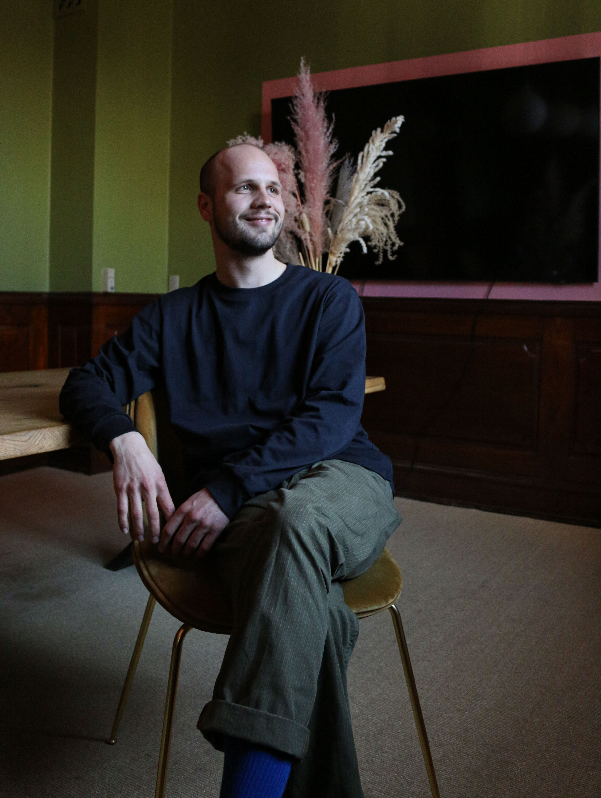

Præsentation
Jonathan er 27 år gammel han kommer fra Odens og er nu i gang med sin kandidat i filmkomposition på Syddansk Musikkonservatorie. Jonathan har en bachelor i saksofon fra Århus konservatorie. Han har altid spillet musik og spillet på saksofon i 20 år. Johantan er inspireret af skønhed i musik, som for ham kan opfattes på mange måder også i form af en grim skønhed.